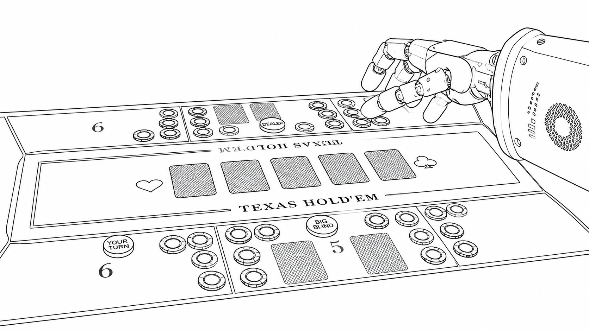

Skill Variants
The released Skills package now includes native, isolated-perception, and backend-stream variants for different agent/runtime tradeoffs.
Runnable System
A coding-agent native runtime for capture, perception, routing, execution, verification, recovery, and auditable state progression.

s_current/00_capture.jpg from the experiment folder.01_parsed_state.md with loop stage, robot behavior, table fields, and uncertainties.visual_parse, resolve_turn, resolve_uncertain_fields, and verify_sequence_complete.
Runtime States
Each state directory stores a capture image plus parsed-state, action, cache, and verification artifacts that make the agent loop inspectable after a run.

s0: initial visual capture before parsing and route selection.
s1: updated tabletop state after an executed primitive.
s2: continued run state for verification and next-step routing.The released Skills package now includes native, isolated-perception, and backend-stream variants for different agent/runtime tradeoffs.
The experiment stores captured images, parsed states, action records,
hole_card_cache.json, and action_sequence.json for replayable
inspection.
The monitor watches the experiment directory and displays current capture, loop stage, table state, safety counters, and human-help alerts.
| Variant | Perception Mode | Runtime Role |
|---|---|---|
dexholdem-v2 |
Scoped visual subagents | Original coding-agent workflow with helper scripts and visual guidelines. |
dexholdem-v2-native |
Main agent reads visual guidelines directly | Single-agent capture, parse, route, execute, verify, and advance loop. |
dexholdem-v2-isolated |
Visible visual_agent writes 01_parsed_state.md |
Main agent owns poker reasoning, caches, robot actions, and recovery decisions. |
dexholdem-v2-backend-preview |
Background perceiver streams fresh parses into /tmp |
Main loop imports validated stream states into the canonical s_current. |
| Group | Actions | Purpose |
|---|---|---|
| Observation | wait, view_card, reset_to_init |
Collect information, wait for turn, or reset the physical state. |
| Poker action | check, fold, call, raise, all_in |
Select legal game-level behavior from parsed table state. |
| Primitive execution | show_card, put_down_card, collect_winnings |
Translate decisions into card and chip motion sequences. |
| Safety | request_human, stop |
Terminate or escalate when safe continuation is not possible. |